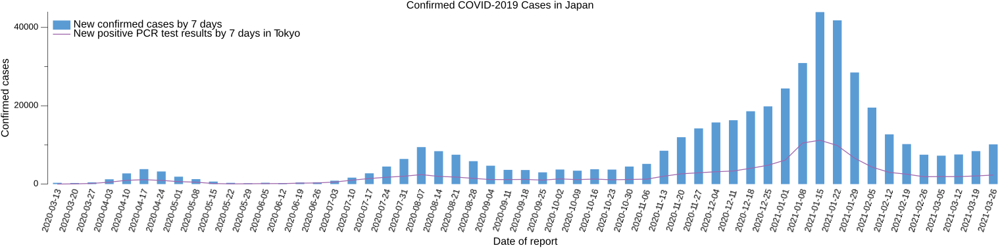

「ウイルスの好物は心のスキ」などと言った首長がいるそうで

新聞系メディアにはリンクしないことにしているので何処の話とは言わないが「ウイルスの好物は心のスキ」などと言った首長がいるそうで，それじゃあ何時まで経っても収束しないに決まってるよね（笑）
旧ブログで6年前に「「なぜなぜ分析」は人に責任を帰さないのが大原則」と書いたが，障害やトラブルが起きた際に，その原因や責任を「人」に帰するのは絶対にやってはいけないことである。
もちろん，個人の心がけとして不注意やうっかりに気をつけるのは結構なことだ。
20年以上前にちょっと死にかけたとき，当時の担当医に「絶対に風邪を引かないように」と無茶振りされたことがある。 念のためにいうと，もちろん（双方分かった上での）冗談話だからね。 でも私のような「高リスク群」に属する人はそのくらいの心づもりが必要なわけで，そのとき以来，私は「覚悟完了」している。 まぁ，それから20年も意地汚く生き残ってるわけだけど（笑）
話が逸れた。
人は間違いやうっかりをする生き物である。 それは人の持つ柔軟性や拡張性の裏面・副作用みたいなもので，むしろ肯定的に捉えるべきものだ。
人的ミスが起きたときに「間違いやうっかり」をなくしましょうと言うのは何も対策しないのと同義である。 「なぜなぜ分析」の結論が「私の不注意でした」となるのは「なぜ」の掘り方を間違えている。
人的ミスが起きたときあるいはミスが起きそうな状況のとき，上に立つ人間がやるべきことは以下の2つだ。
- ミスが減る方向に行動を誘導するためのシステム（環境やルール）を構築する
- ミスが起きた際に周辺に影響が拡大しないよう早く収束させる，またそのための体制づくりをする
そこまでやってはじめて「個人も気をつけましょう」と言えるわけだ。
SARS-CoV-2 パンデミックに関しては，有効な手段として（変異種も含めて）期待できるのはワクチンの同時・集団接種くらいしかない。 しかし実際にはワクチンの調達や接種時期は国や地域によってバラツキがある。 日本なんか庶民にワクチンが降りるのは（シミュレーション（笑）や希望的観測ばかりで）いつになるやら。
そういう現状を踏まえてロックダウンや段階的な移動規制の判断を行う（そしてそれによって不利益を被る経済的弱者に直接的な支援を行う）べきだし，中長期的には風邪やインフルエンザと同じく「SARS-CoV-2 系列のウイルスには誰もが罹る」前提で医療・福祉体制を整えていく必要がある。
つか，そろそろ「緊急避難」を言い訳にした行きあたりばったりな政策は止めようや。
少なくとも（全国レベルで感染規模が3月中旬から拡大傾向に転じているのに）緊急事態を解除して聖火リレーをするとか，その一方で「ウイルスの好物は心のスキ」などと曰う政治家いや政治屋どもの何を信用しろというのか。

というわけで，自分が乗ってる舟のオールを他人任せにしないよう（笑）